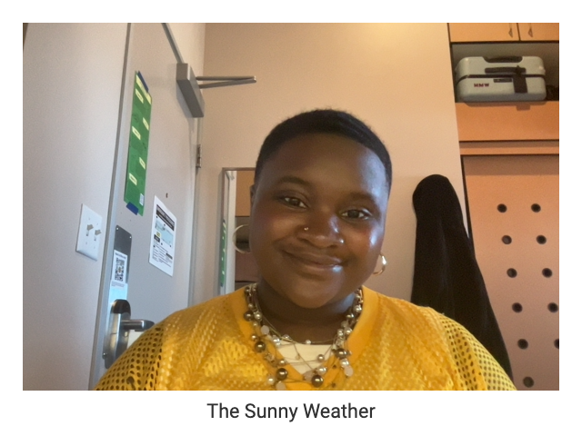
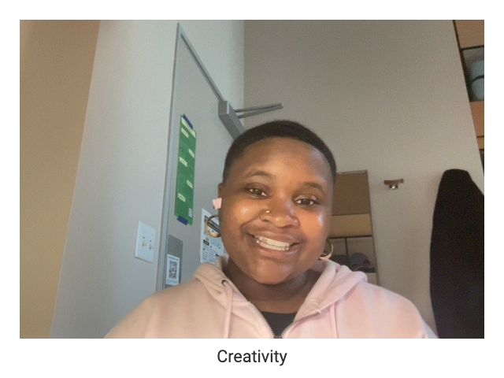

Internet Usage
I Use the internet for quite literally everything. I use it for school work, researching new topics, exploring my interests, and getting creative inspiration.
Reflection Boxes

It's easy to imagine the endless possibilities of life through the internet. I often explore my future aspirations through the internet. I will look at places I want to live once I graduate and careers I wish to follow.

The internet plays a big role in informing me about the weather. With this information I can best assess what to wear and the plans I should make for my day.

The internet had been a breeding ground for exploring and developing my creativity. It's been a beacon of expression since I was a kid and has made art very accesbible. From the influence of Youtube to Tumblr to digital archives, it's where the modern day creative documents their existence.
Reflection on "The Handmade Web"
A website can truly be anything we want it to be. It can be a living room for our thoughts, our creative ideas. It could be a diary, a cookbook, or a blog. That’s the beauty in making a website is that it’s a digital archive of your experiences. With that being said my hopes for the future internet community is that we get back to the roots of craft-like website seen in the early 2000's and use coding as an expression of creativity. I want the internet to continue to be a a way to document who we are, what we experience, an eternal vessel for our art.
Future of the Internet Emotions- Happy and Groovy
Touching Grass Site Contrast
Touching Grass Site Contrast
The "Touching Grass" site serves as a reminder to disconnect from the digital world and immerse oneself in the physical environment. It contrasts the fast-paced, often overwhelming nature of online life with the tranquility and grounding experience of spending time outdoors.
While the internet offers endless opportunities for connection, learning, and entertainment, it's essential to balance screen time with real-world experiences and interactions.
Explore the Touching Grass Site to experience this contrast firsthand.